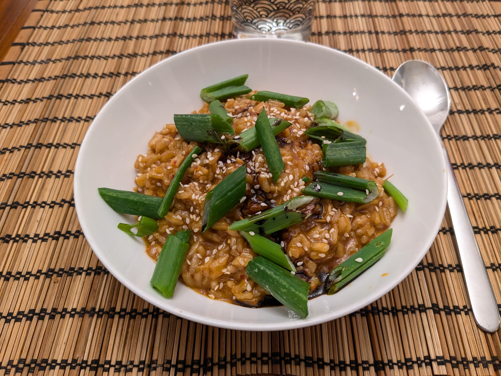

Risotto-minute à la chinoise

Pour 2 personnes :
- Un gros oignon frais, ou deux petits
- 200g de riz à risotto
- Quatre gousses d'ail
- Un pouce de gingembre
- Une cuillère à soupe de gochugaru
- Une pincée de piment de Cayenne
- Une cuillère à soupe de miso
- Une cuillère à café de concentré de tamarin, ou de sauce soja
- 60mL de vin Shaoxing, ou bien d'un autre vin, idéalement sucré
- 550mL de bouillon de poulet ou de légumes, idéalement pas trop salé
- Une cuillère à café de vinaigre Chinkiang, ou d'un autre vinaigre noir de Chine, ou bien de jus de citron
- (Facultatif) Un peu de sauce soja foncée
- (Facultatif) Un peu de sésame
- Poivre, huile d'olive
- Séparer le blanc du vert de l'oignon frais. Émincer le blanc et le faire revenir dans pas mal (genre 50mL) d'huile d'olive au fond d'une cocotte-minute, à feu moyen-chaud.
- Éplucher et émincer l'ail et le gingembre, les rajouter dans la cocotte avec le sel, le gochugaru et le piment, faire revenir deux-trois minutes.
- Ajouter le riz, et le laisser griller deux minutes.
- Ajouter le miso et le tamarin, mélanger, et faire déglacer avec le vin Shaoxin en grattant bien le fond pour éviter que ça commence à n'attacher.
- Ajouter le bouillon, mélanger, et fermer la cocotte-minute. Laisser cuire 8 minutes à partir du moment où la valve se ferme. Pendant ce temps, couper le vert de l'oignon frais en tronçons.
- Ouvrir le couvercle, mélanger, goûter. Si le riz est un peu trop dur ou bien que la sauce est trop liquide, laisser cuire en mélangeant quelques minutes de plus.
- Ajouter le vinaigre, mélanger, servir immédiatement avec un trait de sauce soja foncée, un peu de sésame, et les tronçons d'oignon frais.